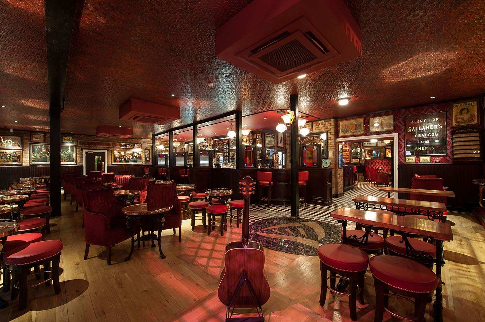

Make sure to get your ‘jeans and a nice top’ at the ready, here is your guide to some of Belfast’s best bars and clubs!
| The Harp Bar Some might think I’m a little bias considering I have worked here for nearly two years but believe me if you want to go out and enjoy the ‘local craic’ this is the spot for you! Every single night you’ll drink along to the sounds of multiple live bands showing off some of the best talent in the area (take a look on their Facebook page or website to see who is playing over the month) some of my person favourite include Ingram Brothers, Discobeard and Juram Gavero. Located in the heart of the Cathedral Quarter if you’re on a drinking tour of Belfast this is definitely one of the many bars in the area to pop into. https://dukeofyorkbelfast.com/venues/harp-bar/ |  |
| The Perch> One of the coolest spots in the city, as the name suggests the Perch is a rooftop bar with a retractable roof which is perfect in the heat of the summer, but more often than not in the cooler (Baltic) temperatures we are used to here. In the winter the roof is closed and heaters and blankets are scattered everywhere to keep you toasty and warm! With the combo of pizza and cocktails they’re really onto a winner plus their seasonal specials are always a great shout, boozy hot chocolates in the winter or the shamelessly instagramable frosé (or frozen rose) in the summer, what’s more to like! Plus with special events like film screenings with a drink and pizza included in the price, there is always things to do here! http://www.theperchbelfast.com/ |
|
| Limelight Possibly the most popular club in the city, Limelight guarantees a good night out. Mondays and Thursdays are the best nights to go out, but if you’re not a student I’d head out for Saturday night when there is a slightly older crowd out! With two club rooms, Katy’s Bar (with a Wii for Mario Kart!) and an upstairs roof bar with smoking area it is also one of Belfast’s biggest clubs playing anything from cheesy 80s, club classics, Irish tunes to current hits you’ll be sure to sing your heart about and dance the night away! http://www.limelightbelfast.com/ |